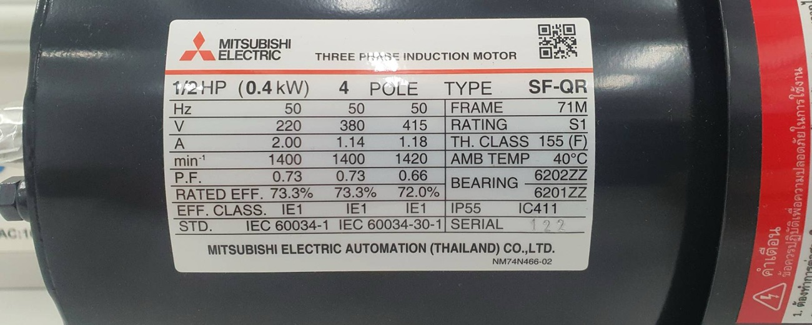
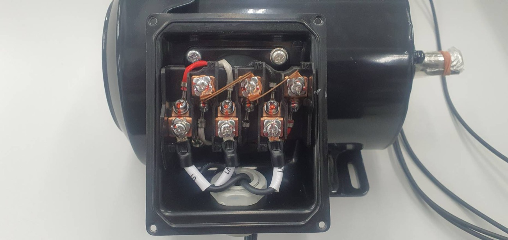

ก่อนเขียนวงจรกำลังของมอเตอร์ตัวไหน ต้องอ่านป้ายพิกัดของมันก่อน ป้ายพิกัดบอกว่าขดลวดทนแรงดันเท่าไร จึงบอกได้ว่าต้องต่อสะพานในกล่องขั้วเป็นสตาร์หรือเดลตา บอกกระแสพิกัดที่ใช้ตั้งโอเวอร์โหลดและเลือกขนาดสาย และบอกว่ามอเตอร์ตัวนั้นเริ่มเดินแบบสตาร์-เดลตาได้หรือไม่ หน้านี้ฝึกอ่านป้ายพิกัดสองแบบ แล้วให้วางสะพานในกล่องขั้วเอง ถ้าต่อผิดจะเห็นทันทีว่าขดลวดได้แรงดันเกินหรือขาด
Before drawing the power circuit of a motor, read its nameplate. It tells you the voltage a winding is built for, and so whether the links in the terminal box go in star or delta; it gives the rated current used to set the overload relay and size the cable; and it tells you whether the motor can be started star-delta. This page reads two nameplates and then lets you place the links in the terminal box yourself. Connect it wrongly and you see at once that the windings get too much or too little voltage.
เลือกมอเตอร์ แล้วแตะช่องบนป้ายพิกัดเพื่ออ่านความหมาย ช่องที่ต้องดูก่อนเขียนแบบคือ แรงดัน (บอกการต่อ) และ กระแส (บอกขนาดอุปกรณ์)
Pick a motor and tap a field of its nameplate to read what it means. The fields to check before drawing are the voltage (it sets the connection) and the current (it sets the device sizes).
แตะจุดระหว่างขั้วเพื่อวางหรือเอาสะพานทองแดงออก เส้นประสีคือขดลวดที่อยู่ใต้แผงขั้ว (ขดลวด U ต่อจาก U1 ไป U2 เป็นต้น) กราฟแท่งด้านขวาคือแรงดันที่ขดลวดแต่ละชุดได้รับ เทียบกับเส้นพิกัดสีเขียว ลองต่อให้ถูกก่อน แล้วลองต่อผิดแบบต่าง ๆ ดูว่าเกิดอะไรขึ้น รวมทั้งสะพานแถวล่างที่ไม่ควรมี
Tap the spot between two terminals to fit or remove a copper link. The coloured dashed lines are the windings under the terminal board (winding U runs from U1 to U2, and so on). The bars on the right are the voltage each winding gets, against the green rating line. Connect it correctly first, then try wrong connections, including bottom-row links that should never be there.
มอเตอร์ 0.4 kW 4 ขั้วในห้องปฏิบัติการมีป้ายพิกัดสามคอลัมน์: 220 V, 380 V และ 415 V ที่ 50 Hz ป้ายนี้ไม่ได้เขียนสัญลักษณ์ Δ/Y แต่ใช้หลักเดียวกันได้: ตัวเลขต่ำสุด 220 V คือแรงดันของขดลวดหนึ่งชุด (ต่อเดลตา) ส่วน 380 และ 415 V คือการต่อสตาร์
ระบบ 400 V ของไทยอยู่ระหว่าง 380 กับ 415 V จึงต้อง ต่อสตาร์ ขดลวดได้ 400 ÷ √3 ≈ 231 V และกระแสพิกัดอยู่ราว 1.14–1.18 A ภาพกล่องขั้วด้านล่างคือมอเตอร์ตัวเดียวกัน สังเกตสะพานทองแดงสองอันที่เชื่อมขั้วแถวบนทั้งสาม: นี่คือการต่อสตาร์
The 0.4 kW, 4-pole lab motor has a nameplate with three columns: 220 V, 380 V and 415 V at 50 Hz. It does not print Δ/Y, but the same rule works: the lowest value, 220 V, is the voltage of one winding (delta), and 380 and 415 V are star.
The Thai 400 V supply lies between 380 and 415 V, so the motor is connected in star: each winding gets 400 ÷ √3 ≈ 231 V and the rated current is about 1.14–1.18 A. The terminal box below belongs to the same motor. Note the two copper links joining all three top-row terminals: that is the star connection.


มอเตอร์ป้ายพิกัด 1.5 kW 230/400 V Δ/Y 5.80/3.35 A ใช้กับระบบไฟ 3 เฟส 400 V จงหา (ก) การต่อขดลวด (ข) แรงดันที่ขดลวดแต่ละชุดได้รับ (ค) กระแสสาย (ง) ถ้าเผลอต่อเดลตา ขดลวดจะได้แรงดันกี่เท่าของพิกัด
A motor rated 1.5 kW, 230/400 V Δ/Y, 5.80/3.35 A is used on a 400 V three-phase supply. Find (a) the connection, (b) the voltage across each winding, (c) the line current, (d) how many times its rating a winding gets if it is connected in delta by mistake.
มอเตอร์ป้ายพิกัด 7.5 kW 400/690 V Δ/Y 14.7/8.50 A ใช้กับระบบไฟ 400 V จงหา (ก) การต่อขดลวด (ข) กระแสสายและกระแสในขดลวด (ค) ถ้าเริ่มเดินแบบสตาร์ ขดลวดได้แรงดันเท่าไร และมอเตอร์นี้เริ่มเดินแบบสตาร์-เดลตาได้หรือไม่
A motor rated 7.5 kW, 400/690 V Δ/Y, 14.7/8.50 A is used on a 400 V supply. Find (a) the connection, (b) the line current and the winding current, (c) the winding voltage while it is started in star, and whether this motor can be started star-delta.